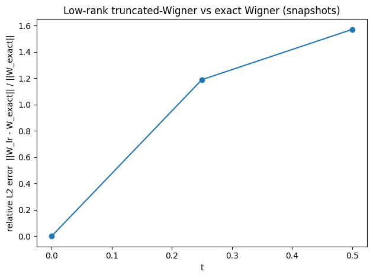
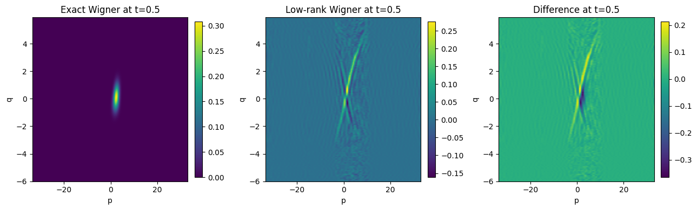
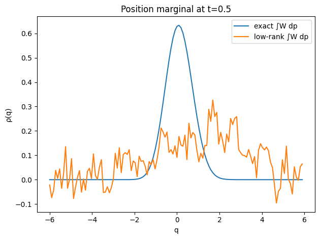

import numpy as np
import matplotlib.pyplot as plt
# ============================================================
# Compare low-rank Wigner PDE propagation vs "exact" quantum dynamics
# for 1D quartic oscillator V(q)=1/2 m ω^2 q^2 + λ q^4.
#
# Exact dynamics: split-operator (Strang) propagation of ψ(q,t).
# Exact Wigner: computed from ψ via the defining integral using FFT shifts.
#
# Low-rank dynamics: projector-splitting integrator for W ≈ U S V^T (fixed rank r)
# applied to the truncated (O(hbar^2)) Wigner equation:
# ∂t W = -(p/m) ∂q W + V'(q) ∂p W - (hbar^2/24) V'''(q) ∂p^3 W
#
# Everything uses periodic grids; momentum grid is the FFT-conjugate of the q-grid.
# ============================================================
# -------------------- FFT derivatives & filtering --------------------
def deriv_fft(X, L, order, axis=0):
n = X.shape[axis]
dq = L / n
k = 2.0 * np.pi * np.fft.fftfreq(n, d=dq) # wave numbers
shape = [1] * X.ndim
shape[axis] = n
ik = (1j * k).reshape(shape)
Xhat = np.fft.fft(X, axis=axis)
Yhat = (ik ** order) * Xhat
return np.fft.ifft(Yhat, axis=axis).real
def lowpass_fft(X, frac=2/3, axis=0):
n = X.shape[axis]
f = np.fft.fftfreq(n)
mask = (np.abs(f) <= 0.5 * frac)
Xhat = np.fft.fft(X, axis=axis)
shape = [1] * X.ndim
shape[axis] = n
Xhat *= mask.reshape(shape)
return np.fft.ifft(Xhat, axis=axis).real
# -------------------- Potential and derivatives --------------------
def V_quartic(q, m=1.0, omega=1.0, lam=0.05):
return 0.5 * m * (omega**2) * q**2 + lam * q**4
def Vprime_quartic(q, m=1.0, omega=1.0, lam=0.05):
return m * (omega**2) * q + 4.0 * lam * q**3
def Vthird_quartic(q, lam=0.05):
return 24.0 * lam * q
# -------------------- Low-rank Wigner integrator pieces --------------------
def apply_A0(Y, Lq): # A0 = -∂q
return -deriv_fft(Y, L=Lq, order=1, axis=0)
def apply_A0_T(Y, Lq): # A0^T = +∂q (since (∂q)^T = -∂q)
return +deriv_fft(Y, L=Lq, order=1, axis=0)
def apply_A1(Y, Vp_q): # diag(V')
return Vp_q[:, None] * Y
def apply_A2(Y, V3_q, hbar): # -(hbar^2/24) diag(V''')
return -(hbar**2 / 24.0) * (V3_q[:, None] * Y)
def apply_B0(V, p, m): # diag(p/m)
return (p / m)[:, None] * V
def apply_B1(V, Lp): # ∂p
return deriv_fft(V, L=Lp, order=1, axis=0)
def apply_B2(V, Lp): # ∂p^3
return deriv_fft(V, L=Lp, order=3, axis=0)
def apply_B0_T(X, p, m):
return (p / m)[:, None] * X
def apply_B1_T(X, Lp): # (∂p)^T = -∂p
return -deriv_fft(X, L=Lp, order=1, axis=0)
def apply_B2_T(X, Lp): # (∂p^3)^T = -∂p^3
return -deriv_fft(X, L=Lp, order=3, axis=0)
def rk4(Y, dt, f):
k1 = f(Y)
k2 = f(Y + 0.5*dt*k1)
k3 = f(Y + 0.5*dt*k2)
k4 = f(Y + dt*k3)
return Y + (dt/6.0)*(k1 + 2*k2 + 2*k3 + k4)
def mass_from_factors(U, S, V, dq, dp):
ones_q = np.ones(U.shape[0])
ones_p = np.ones(V.shape[0])
a = U.T @ ones_q
b = V.T @ ones_p
return (a @ S @ b) * dq * dp
def rescale_mass(U, S, V, dq, dp, target_mass=1.0):
mcur = mass_from_factors(U, S, V, dq, dp)
if not np.isfinite(mcur) or abs(mcur) < 1e-300:
return U, S, V
S = S * (target_mass / mcur)
return U, S, V
def low_rank_step(
U, S, V, dt, q, p, Lq, Lp, dq, dp,
m=1.0, hbar=1.0, omega=1.0, lam=0.05,
filter_frac=2/3, filter_V=True, filter_U=False,
fix_mass=True
):
Vp_q = Vprime_quartic(q, m=m, omega=omega, lam=lam)
V3_q = Vthird_quartic(q, lam=lam)
# Mk = V^T (Bk V)
B0V = apply_B0(V, p, m)
B1V = apply_B1(V, Lp)
B2V = apply_B2(V, Lp)
M0 = V.T @ B0V
M1 = V.T @ B1V
M2 = V.T @ B2V
# (1) K-step: K = U S, V fixed
K = U @ S
def Kdot(Kmat):
return (apply_A0(Kmat @ M0, Lq)
+ apply_A1(Kmat @ M1, Vp_q)
+ apply_A2(Kmat @ M2, V3_q, hbar))
K = rk4(K, dt, Kdot)
U, R = np.linalg.qr(K, mode="reduced")
S = R
# (2) S-step
A0U = apply_A0(U, Lq)
A1U = apply_A1(U, Vp_q)
A2U = apply_A2(U, V3_q, hbar)
Ahat0 = U.T @ A0U
Ahat1 = U.T @ A1U
Ahat2 = U.T @ A2U
def Sdot(Smat):
return (Ahat0 @ Smat @ M0) + (Ahat1 @ Smat @ M1) + (Ahat2 @ Smat @ M2)
S = rk4(S, dt, Sdot)
# (3) L-step: L = V S^T, U fixed
L = V @ S.T
N0 = U.T @ apply_A0_T(U, Lq)
N1 = U.T @ A1U
N2 = U.T @ A2U
def Ldot(Lmat):
return (apply_B0_T(Lmat @ N0, p, m)
+ apply_B1_T(Lmat @ N1, Lp)
+ apply_B2_T(Lmat @ N2, Lp))
L = rk4(L, dt, Ldot)
V, R = np.linalg.qr(L, mode="reduced")
S = R.T
# mild filtering (important for stability in the ∂p^3 term)
if filter_V:
Vf = lowpass_fft(V, frac=filter_frac, axis=0)
V, Rv = np.linalg.qr(Vf, mode="reduced")
S = S @ Rv.T
if filter_U:
Uf = lowpass_fft(U, frac=filter_frac, axis=0)
U, Ru = np.linalg.qr(Uf, mode="reduced")
S = Ru @ S
if fix_mass:
U, S, V = rescale_mass(U, S, V, dq, dp, target_mass=1.0)
return U, S, V
# -------------------- Exact quantum propagation (split-operator) --------------------
def gaussian_psi(q, q0=0.0, p0=0.0, sigma=0.8, hbar=1.0):
# ψ(q) ∝ exp(-(q-q0)^2/(2σ^2) + i p0 (q-q0)/ħ)
psi = np.exp(-0.5*((q-q0)/sigma)**2 + 1j*(p0*(q-q0)/hbar))
return psi
def normalize_psi(psi, dq):
nrm = np.sqrt(np.sum(np.abs(psi)**2) * dq)
return psi / nrm
def split_operator_step(psi, dt, Vq, p, m=1.0, hbar=1.0):
psi = psi * np.exp(-1j * Vq * (dt/(2*hbar)))
psi_k = np.fft.fft(psi)
psi_k = psi_k * np.exp(-1j * (p**2/(2*m)) * (dt/hbar))
psi = np.fft.ifft(psi_k)
psi = psi * np.exp(-1j * Vq * (dt/(2*hbar)))
return psi
# -------------------- Exact Wigner from ψ (periodic, FFT shifts) --------------------
def wigner_from_psi(psi, Lq, hbar=1.0):
"""
Computes W(q_i,p_j) on the same q-grid and FFT-conjugate p-grid.
Uses definition: W(q,p) = (1/2πħ) ∫ dy e^{-i p y/ħ} ψ*(q-y/2) ψ(q+y/2).
Fractional shifts are computed exactly (periodic band-limited) via Fourier phases.
"""
N = psi.size
dq = Lq / N
k = 2.0*np.pi*np.fft.fftfreq(N, d=dq)
p = hbar * k # FFT momentum grid (standard ordering)
psi_hat = np.fft.fft(psi)
n = np.arange(-N//2, N//2) # y index (centered)
y = n * dq
g = np.empty((N, N), dtype=np.complex128) # g(q_i, y_n)
for col, yy in enumerate(y):
s = 0.5 * yy
phase = np.exp(1j * k * s)
psi_plus = np.fft.ifft(psi_hat * phase)
psi_minus = np.fft.ifft(psi_hat * np.conj(phase))
g[:, col] = np.conj(psi_minus) * psi_plus
g_std = np.fft.ifftshift(g, axes=1) # put y in standard FFT order
W_std = (dq / (2*np.pi*hbar)) * np.fft.fft(g_std, axis=1)
W = W_std.real
return W, p
# -------------------- Diagnostics --------------------
def rel_l2(A, B, dq, dp):
num = np.sqrt(np.sum((A-B)**2) * dq * dp)
den = np.sqrt(np.sum(B**2) * dq * dp)
return num / (den + 1e-300)
def marg_q(W, dp):
return np.sum(W, axis=1) * dp
def plot_wigner(ax, W, q, p, title):
# show in (q,p) with p shifted for readability
pS = np.fft.fftshift(p)
WS = np.fft.fftshift(W, axes=1)
im = ax.imshow(WS, aspect="auto",
extent=[pS[0], pS[-1], q[0], q[-1]],
origin="lower")
ax.set_title(title)
ax.set_xlabel("p")
ax.set_ylabel("q")
plt.colorbar(im, ax=ax, fraction=0.046, pad=0.04)
# ============================================================
# Main run
# ============================================================
def run_compare(
N=128, # grid size in q (and p)
Lq=12.0, # q-domain length
r=20, # low-rank (bond dimension)
T=0.5, # final time
dt=2e-4, # time step (reduce if needed)
m=1.0, hbar=1.0,
omega=1.0, lam=0.05,
q0=-1.0, p0=2.0, sigma=0.8,
snapshot_times=(0.0, 0.25, 0.5),
filter_frac=2/3
):
dq = Lq / N
q = (np.arange(N) - N//2) * dq # centered periodic grid
# FFT momentum grid for this q grid
k = 2.0*np.pi*np.fft.fftfreq(N, d=dq)
p = hbar * k
dp = (2*np.pi*hbar) / Lq
Lp = N * dp
Vq = V_quartic(q, m=m, omega=omega, lam=lam)
# exact initial psi and its Wigner
psi = normalize_psi(gaussian_psi(q, q0=q0, p0=p0, sigma=sigma, hbar=hbar), dq)
W_exact0, _ = wigner_from_psi(psi, Lq, hbar=hbar)
# low-rank init from W_exact0
U0, s0, Vt0 = np.linalg.svd(W_exact0, full_matrices=False)
U = U0[:, :r]
S = np.diag(s0[:r])
V = Vt0[:r, :].T
# orthonormalize U,V and absorb into S
U, Ru = np.linalg.qr(U, mode="reduced")
V, Rv = np.linalg.qr(V, mode="reduced")
S = Ru @ S @ Rv.T
U, S, V = rescale_mass(U, S, V, dq, dp, target_mass=1.0)
# time loop
nsteps = int(np.round(T / dt))
times = np.linspace(0.0, T, nsteps+1)
snap_set = set([float(t) for t in snapshot_times])
snap_idx = {int(np.round(t/dt)): t for t in snapshot_times}
snaps = {}
# store t=0
snaps[0.0] = {
"W_exact": W_exact0,
"W_lr": (U @ S @ V.T),
"psi": psi
}
for n in range(1, nsteps+1):
# exact step
psi = split_operator_step(psi, dt, Vq, p, m=m, hbar=hbar)
psi = normalize_psi(psi, dq)
# low-rank step
U, S, V = low_rank_step(
U, S, V, dt, q, p, Lq, Lp, dq, dp,
m=m, hbar=hbar, omega=omega, lam=lam,
filter_frac=filter_frac, filter_V=True, filter_U=False,
fix_mass=True
)
if n in snap_idx:
t = snap_idx[n]
W_exact, _ = wigner_from_psi(psi, Lq, hbar=hbar)
W_lr = U @ S @ V.T
snaps[t] = {"W_exact": W_exact, "W_lr": W_lr, "psi": psi}
# compute summary errors at snapshots
summary = []
for t in sorted(snaps.keys()):
Wex = snaps[t]["W_exact"]
Wlr = snaps[t]["W_lr"]
e = rel_l2(Wlr, Wex, dq, dp)
summary.append((t, e))
return q, p, dq, dp, snaps, np.array(summary)
# -------------------- Run and plot --------------------
if __name__ == "__main__":
q, p, dq, dp, snaps, summary = run_compare(
N=128, Lq=12.0, r=20, T=0.5, dt=2e-4,
omega=1.0, lam=0.05, q0=-1.0, p0=2.0, sigma=0.8,
snapshot_times=(0.0, 0.25, 0.5),
filter_frac=2/3
)
# error vs time (snapshots)
plt.figure()
plt.plot(summary[:, 0], summary[:, 1], marker="o")
plt.xlabel("t")
plt.ylabel("relative L2 error ||W_lr - W_exact|| / ||W_exact||")
plt.title("Low-rank truncated-Wigner vs exact Wigner (snapshots)")
plt.tight_layout()
# Wigner heatmaps at final snapshot
t_show = float(summary[-1, 0])
Wex = snaps[t_show]["W_exact"]
Wlr = snaps[t_show]["W_lr"]
Wdiff = Wlr - Wex
fig, axes = plt.subplots(1, 3, figsize=(13, 4))
plot_wigner(axes[0], Wex, q, p, f"Exact Wigner at t={t_show}")
plot_wigner(axes[1], Wlr, q, p, f"Low-rank Wigner at t={t_show}")
plot_wigner(axes[2], Wdiff, q, p, f"Difference at t={t_show}")
plt.tight_layout()
# Compare q-marginals at final snapshot
rhoq_ex = marg_q(Wex, dp)
rhoq_lr = marg_q(Wlr, dp)
plt.figure()
plt.plot(q, rhoq_ex, label="exact ∫W dp")
plt.plot(q, rhoq_lr, label="low-rank ∫W dp")
plt.xlabel("q")
plt.ylabel("ρ(q)")
plt.title(f"Position marginal at t={t_show}")
plt.legend()
plt.tight_layout()
plt.show()


